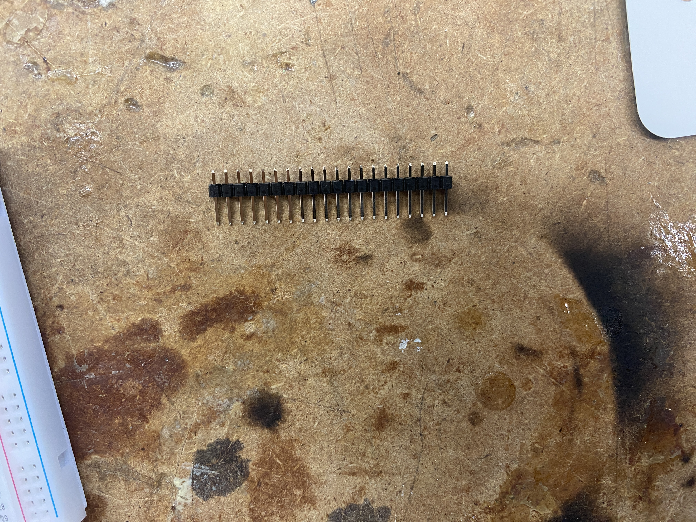
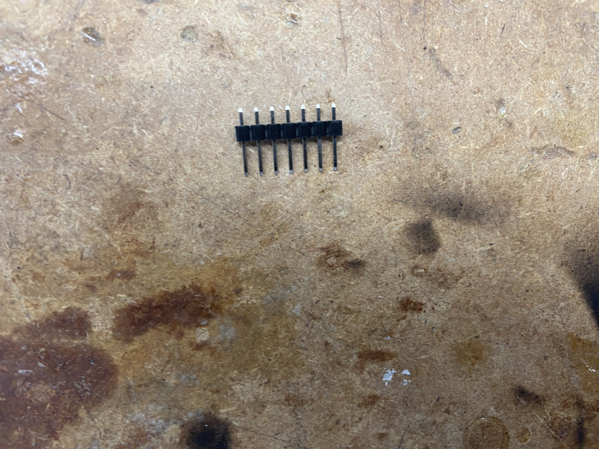
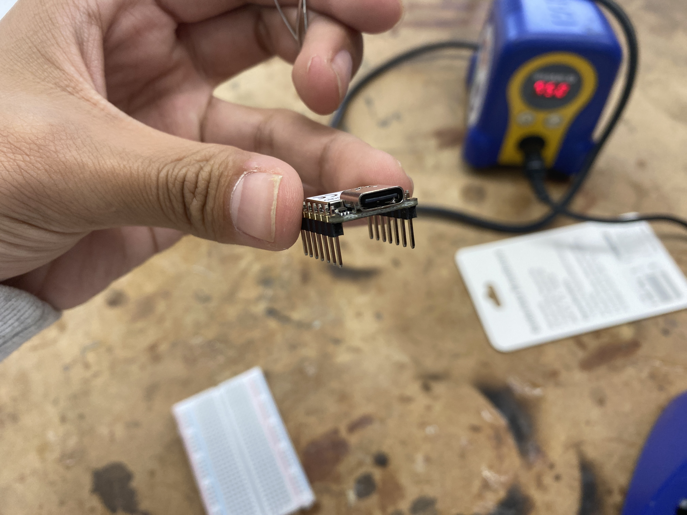

RP2040
Soldering

I then snapped them in half so I could solder one half to each side of the RP2040.

Next, I pushed the legs into the RP2040 to ensure that it all fit together.
|  |  |
After soldering the legs on, I plugged the RP2040 into my computer and uploaded the code.